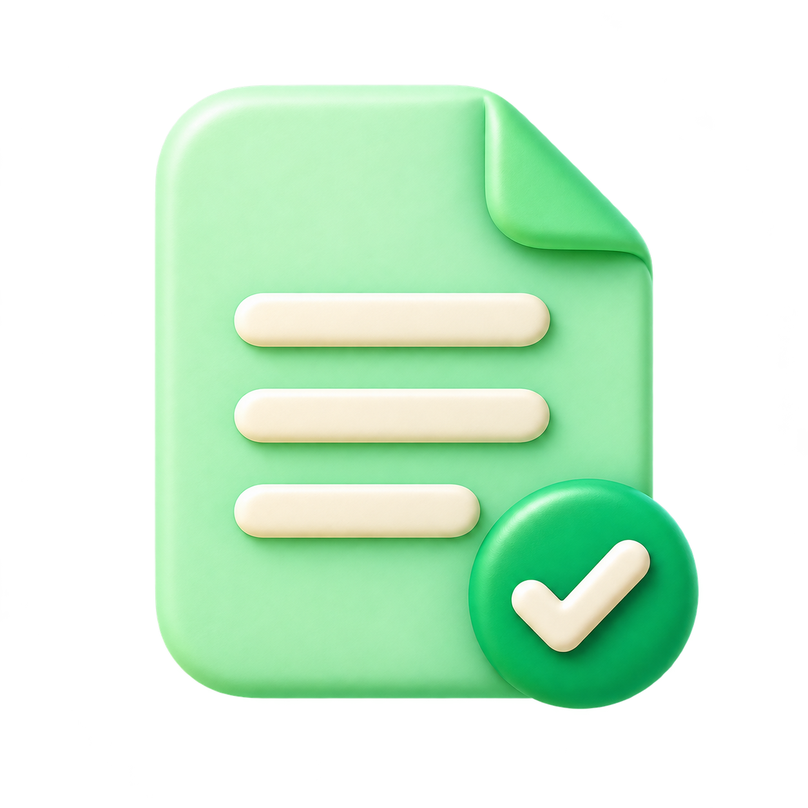
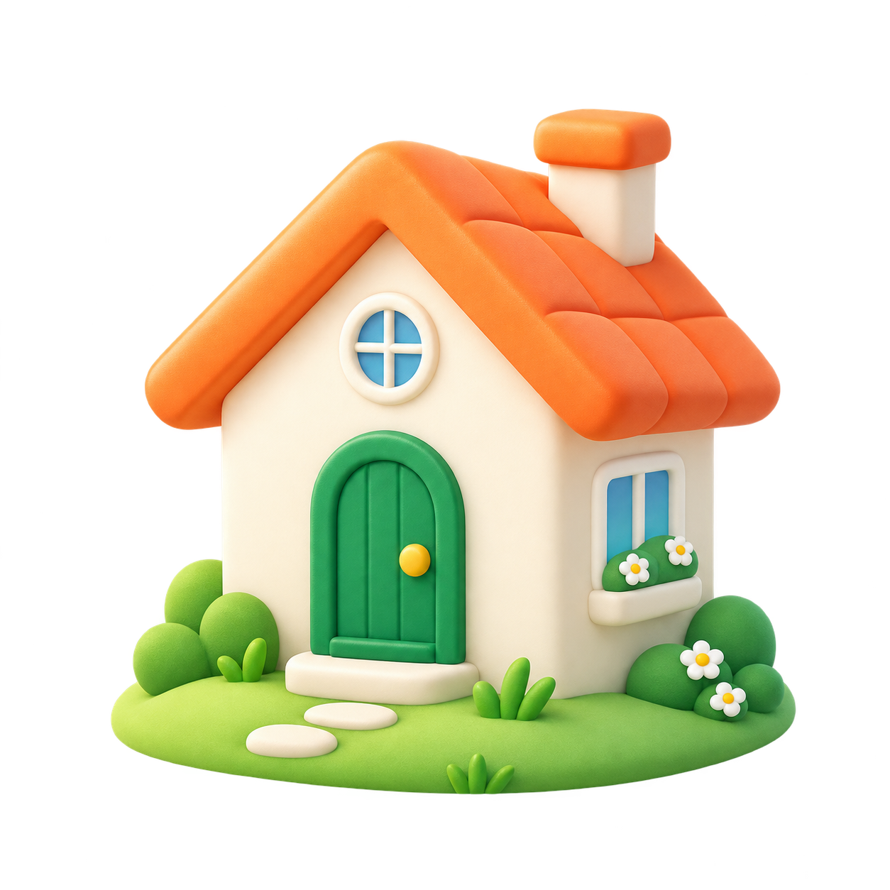
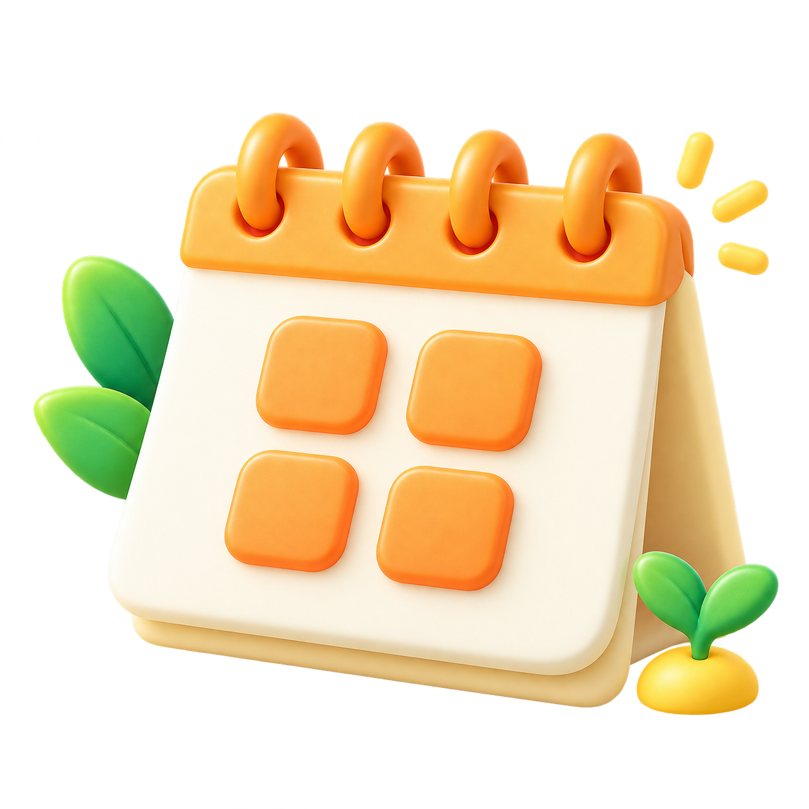

기본 · 인사pio-default.png1254 × 1254 · 투명 PNG원본 저장 ↗
20FIN / IMAGE ASSETS V1
우리의 다음을 그리는 에셋.
피오 5종 · 풍경 3종 · 이벤트와 기능 아이콘 10종
나의 20대
지금까지의 이야기와 앞으로의 계획을 한눈에.
피오 · 5가지 순간
{kind=link}
생각 · 답변 준비pio-thinking.png1230 × 1278 · 투명 PNG원본 저장 ↗
{kind=link}
안내 · 다음 행동pio-guide.png1238 × 1271 · 투명 PNG원본 저장 ↗
{kind=link}
완료 · 축하pio-celebrate.png1230 × 1278 · 투명 PNG원본 저장 ↗
{kind=link}
응원 · 동반자pio-support.png1230 × 1278 · 투명 PNG원본 저장 ↗
{kind=link}
풍경 · 3가지 화면
데스크톱 타임라인landscape-timeline-desktop.png1536 × 1024 · 배경 PNG원본 저장 ↗
{kind=link}
모바일 온보딩landscape-timeline-mobile.png1024 × 1536 · 배경 PNG원본 저장 ↗
{kind=link}
도시 응원 배너landscape-city-banner.png1774 × 887 · 배경 PNG원본 저장 ↗
{kind=link}
이벤트와 금융 행동 · 10종
입학 · 졸업event-education.png1254 × 1254 · 투명 PNG원본 저장 ↗
{kind=link}

학자금 · 서류event-student-loan.png1254 × 1254 · 투명 PNG원본 저장 ↗
{kind=link}

독립 · 주거event-housing.png1254 × 1254 · 투명 PNG원본 저장 ↗
{kind=link}
취업 · 인턴event-career.png1254 × 1254 · 투명 PNG원본 저장 ↗
{kind=link}
저축 · 자산형성event-savings.png1254 × 1254 · 투명 PNG원본 저장 ↗
{kind=link}
첫 월급event-first-salary.png1254 × 1254 · 투명 PNG원본 저장 ↗
{kind=link}
보호 · 계약 점검utility-protection.png1254 × 1254 · 투명 PNG원본 저장 ↗
{kind=link}
지원 · 기회utility-opportunity.png1254 × 1254 · 투명 PNG원본 저장 ↗
{kind=link}

일정 · 마감utility-deadline.png1254 × 1254 · 투명 PNG원본 저장 ↗
{kind=link}
미래 목표event-goal.png1254 × 1254 · 투명 PNG원본 저장 ↗
{kind=link}